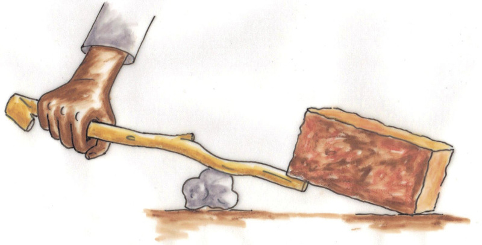
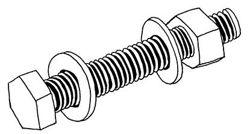
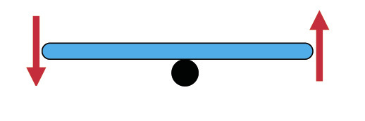

<div class="container">
  <div id="contents" class="col-md-12 main-content"><h1 xmlns="http://www.w3.org/1999/xhtml" id="toc-id-11">Push and lift objects</h1>
    <p xmlns="http://www.w3.org/1999/xhtml" class="x--Body-opener">In this chapter, you will learn about
    ways in which people manage to do things that they cannot do
    with their bodies alone.</p>

     

    <figure xmlns="http://www.w3.org/1999/xhtml"><figcaption>Figure 1</figcaption></figure>

    <h3 xmlns="http://www.w3.org/1999/xhtml" class="x--Head-investigation">Special projects</h3>

    <p xmlns="http://www.w3.org/1999/xhtml" class="x--Body-Text">If you have time to spare in class or
    at home, give one or more of these activities a try:</p>
<ol xmlns="http://www.w3.org/1999/xhtml"><li>
    <p class="x--Body-investigation-hanging"> Build a working
    model of the water lever on the next page. If you can make it
    in the next two days, you can use it in lesson 4.3.</p></li><li>

    <p class="x--Body-investigation-hanging"> Look carefully at
    the coloured diagrams on the next page. Try to see what
    properties of levers can be seen in the diagrams. Write
    captions for the drawings that explain what they show.</p></li></ol>
	<figure xmlns="http://www.w3.org/1999/xhtml"><div class="frame-3"></div>
	<figcaption>Figure 2</figcaption></figure><figure xmlns="http://www.w3.org/1999/xhtml"><div class="frame-3"></div>
	<figcaption>Figure 3: The buckets are used to take water from the well.</figcaption></figure><h2 xmlns="http://www.w3.org/1999/xhtml" id="toc-id-12">Lift things with a lever</h2>

    <p xmlns="http://www.w3.org/1999/xhtml" class="x--Body-Text">In the pictures below, Tom tries to
    lift one side of a block of concrete with a <span class="Body-bold"><b>lever</b></span>. The pictures show three different
    ways in which he can try to do so.</p>
<ol xmlns="http://www.w3.org/1999/xhtml"><li>
    <p class="x--Body-investigation-hanging"> Which way do you
    think will work best, and why do you think so?</p>
    <hr/></li>
</ol>
    <p xmlns="http://www.w3.org/1999/xhtml" class="x--Body-Text para-style-override-6">The lever rests
    on a small stone and will turn on the stone. When Tom pushes
    the one end of the lever down, the other end pushes the
    concrete block up.</p>


  	<figure xmlns="http://www.w3.org/1999/xhtml"><div class="frame-3"></div>
	<figcaption>Figure 4 </figcaption></figure>    <ol xmlns="http://www.w3.org/1999/xhtml"><li value="2">
     Describe what is different about the lever in each of the
    three cases.    <hr/></li>
</ol>
    <h3 xmlns="http://www.w3.org/1999/xhtml" class="x--Head-investigation">Join two classmates and work with a lever</h3>

    <p xmlns="http://www.w3.org/1999/xhtml" class="x--Body-Text"><span class="Body-bold"><b>You need three
    things for this activity:</b></span></p>

    <ul xmlns="http://www.w3.org/1999/xhtml"><li class="x--Body-text-bullet">  a stick of
      about 30 cm long, that can be used as a lever,</li>

      <li class="x--Body-text-bullet">  a brick or
      a stone about the size of a brick, and</li>

      <li class="x--Body-text-bullet">  something
      on which the lever can be supported.</li>
    </ul><p xmlns="http://www.w3.org/1999/xhtml" class="x--Body--above"><span class="Body-bold"><b>Now do the
    following:</b></span></p>

    <p xmlns="http://www.w3.org/1999/xhtml" class="x--Body-Text">Use the stick as a lever to lift one
    side of the brick.</p>

	<figure xmlns="http://www.w3.org/1999/xhtml"><figcaption>Figure 5</figcaption></figure><div xmlns="http://www.w3.org/1999/xhtml" class="note">
     The point where the stick is supported by the brick
or stone is called the <b>fulcrum</b> or <b>pivot point</b>.

    </div>

    <p xmlns="http://www.w3.org/1999/xhtml" class="x--Body--above">Take turns to use the stick as a
    lever to lift the one end of the brick. Do it with different
    positions of the fulcrum, so that you can answer the question
    below.</p>
<ol xmlns="http://www.w3.org/1999/xhtml"> <li value="3">
    <p class="x--Body-investigation-hanging"> When does the lever
    help you most? Is it when the fulcrum is close to the brick or
    when it is far from the brick?</p>
    <hr/></li>
 </ol>

    <h3 xmlns="http://www.w3.org/1999/xhtml" class="x--Head-investigation">If you did not do the above, do this:</h3>

    <p xmlns="http://www.w3.org/1999/xhtml" class="x--Body-Text">Put your pencil against the edge of a
    book and try to lift the one side of another book up, as shown
    in the picture below.</p>
	
	<figure xmlns="http://www.w3.org/1999/xhtml"><figcaption>Figure 6</figcaption></figure><p xmlns="http://www.w3.org/1999/xhtml" class="x--Body--above">Do this with the edge of the book on
    the left in different positions below the pencil.</p>
	<figure xmlns="http://www.w3.org/1999/xhtml"><figcaption>Figure 7</figcaption></figure>
    
    <ol xmlns="http://www.w3.org/1999/xhtml"><li value="4">
    <p class="x--Body-investigation-hanging--1-3-"> In which
    position of the fulcrum does the pencil give you the greatest
    "advantage" for lifting the book?</p>
<hr/>
</li></ol>
<div xmlns="http://www.w3.org/1999/xhtml" class="aside">
      <p class="x--Body-box-no-indent">In this case, the word
      advantage means that the lever makes it easier for you to
      lift the object.</p>
    </div>
    

    <div xmlns="http://www.w3.org/1999/xhtml" class="aside">
      <p class="x--Body-box-no-indent">Some words that may be new
      to you, or are used in a new way, are printed in quotation
      marks, for example "advantage". This is to tell you that you
      may not immediately understand the word, but you will learn
      what it means as you continue.</p>
    </div>
    <hr xmlns="http://www.w3.org/1999/xhtml"/><div xmlns="http://www.w3.org/1999/xhtml" class="note">
     <p> When something is too heavy to lift by hand, you
can use a lever to help you lift it. If you want to lift
a heavy object, you should use a long lever and the
fulcrum should be close to the object that you want
to lift. If you give a soft or weak downwards push
on the one side of the lever, there will be a strong
upwards push on the object on the other side of the
lever.</p>

    </div>

    <p xmlns="http://www.w3.org/1999/xhtml" class="x--Body-Text">Scientists and technologists use the
    words "mechanical advantage" when referring to this. In the
    pictures below, the lever gives you a greater mechanical
    advantage when the fulcrum is closer to the brick.</p>

    <p xmlns="http://www.w3.org/1999/xhtml" class="x--caption para-style-override-5"><span></span> </p>
<ol xmlns="http://www.w3.org/1999/xhtml">
     <li value="5">

    <p class="x--Body-investigation-hanging para-style-override-6">
     <span>Have another look at Figure 4 of this chapter. Which
    m</span>ethod gives Tom the biggest mechanical a<span>dvantage
    when he uses the lever?</span></p>
    <hr/></li>
</ol>
    <div xmlns="http://www.w3.org/1999/xhtml" class="note">
      <p>The downward push that Tom makes on the lever is
called the <b>input force</b> or <b>effort</b>.
The weight of the concrete block that tries to keep
the other end of the lever down is called the <b>load</b>.
The upward push on the load is called the <b>output
force</b> or <b>effect</b>.
</p>
    </div>

	<figure xmlns="http://www.w3.org/1999/xhtml"><div class="frame-3"></div>
	<figcaption>Figure 10</figcaption></figure><div xmlns="http://www.w3.org/1999/xhtml" class="aside">A lever like this where the
fulcrum is between the input
force and the output force, is
called a <b>first-class lever</b>.
</div>


    <p xmlns="http://www.w3.org/1999/xhtml" class="x--Body-Text">When you use a lever to lift an object,
    the push on the object may be stronger than, equal to or weaker
    than your input force.</p>
<ol xmlns="http://www.w3.org/1999/xhtml"><li value="6">
    <p class="x--Body-investigation-hanging"> Where is the input
    force, the load and the fulcrum on each of these pictures?
    Write your answers next to the pictures.</p>
</li></ol>
    <div xmlns="http://www.w3.org/1999/xhtml" class="aside">
      <p class="x--Body-box-no-indent">The output force may be
      smaller than the input force. In this case, technologists say
      the mechanical advantage is smaller than 1. This is actually
      a mechanical disadvantage.</p>

      <p class="x--Body-box-no-indent">The output force may be
      bigger than the input force.In that case, technologists say
      the mechanical advantage is greater than 1.</p>

      <p class="x--Body-box-no-indent">If the output force is equal
      to the input force, technologists say the mechanical
      advantage is 1.</p>
    </div>
	<figure xmlns="http://www.w3.org/1999/xhtml"><figcaption>Figure 11</figcaption></figure><h3 xmlns="http://www.w3.org/1999/xhtml" class="x--Head-investigation">Important: something you need to do at home</h3>

    <p xmlns="http://www.w3.org/1999/xhtml" class="x--Body-Text">Bring a box or two pieces of cardboard
    that are at least as big as an A4 sheet of paper to your next
    Technology class. You will need this to make a cardboard lever
    and to do a few experiments.</p>

    <p xmlns="http://www.w3.org/1999/xhtml" class="x--Body-indent para-style-override-11">It helps the
    environment if you pick up boxes or pieces of cardboard and
    other trash that lie around in the street, so pick these up and
    help to keep our streets clean!</p>

    <h2 xmlns="http://www.w3.org/1999/xhtml" id="toc-id-13">Move things without touching them</h2>

    <p xmlns="http://www.w3.org/1999/xhtml" class="x--Body-text-1-3 para-style-override-60">A lever can
    turn around the fulcrum.</p>

    <p xmlns="http://www.w3.org/1999/xhtml" class="x--Body-text-1-3 para-style-override-60">We also say
    the lever "pivots" around the fulcrum.</p>

    <div xmlns="http://www.w3.org/1999/xhtml">
	<figure><div class="frame-3"></div>
	<figcaption>Figure 12</figcaption></figure></div>

    <p xmlns="http://www.w3.org/1999/xhtml" class="x--Body-Text">In the diagrams below, the fulcrum is
    in different positions.</p>

    <p xmlns="http://www.w3.org/1999/xhtml" class="x--Body-indent">In each case, state whether the
    mechanical advantage is bigger than 1, equal to 1 or smaller
    than 1.</p>

    <div xmlns="http://www.w3.org/1999/xhtml">
	<figure><div class="frame-3"></div>
 	<figcaption>Figure 13</figcaption></figure></div>

    

    <h3 xmlns="http://www.w3.org/1999/xhtml" class="x--Head-investigation">Make a lever with a base</h3>

    <p xmlns="http://www.w3.org/1999/xhtml" class="x--Body-Text">In this activity, you will make a lever
    that you can use to do a few experiments. Doing the experiments
    will help you to understand levers better.</p>

    <figure xmlns="http://www.w3.org/1999/xhtml"><figcaption>Figure 14</figcaption></figure><ol xmlns="http://www.w3.org/1999/xhtml"><li>
    <p class="x--Body-investigation-hanging"> Mark the fulcrum of
    the lever in the photograph.</p>

    <div class="aside">
      <p class="x--Body-box-no-indent">Instead of <span class="char-style-override-2"><b>fulcrum</b></span> we can say
      <span class="char-style-override-2"><b>pivot point</b></span>. It
      means the same.</p>
    </div>

    <p class="x--Body-investigation-hanging para-style-override-8">
    If you make your lever from cardboard, you will need the tools
    and materials below.</p>

    <table id="table-22" class="No-Table-Style"><tbody><tr class="Row-Column-120"><td class="None cell-style-override-3">
            <b>Tools:</b>
          </td>

          <td class="None cell-style-override-3">
            <b>Materials:</b>
          </td>
        </tr><tr class="Row-Column-121"><td class="None cell-style-override-3">
            <ul><li class="x--Body-text-bullet">  a
              pair of scissors,</li>

              <li class="x--Body-text-bullet">  a
              sharp pencil or a nail.</li>

               
            </ul></td>

          <td class="None cell-style-override-3">
            <ul><li class="x--Body-text-bullet">  a
              strip of corrugated cardboard about 30 cm long,</li>

              <li class="x--Body-text-bullet">  a
              piece of corrugated cardboard about as big as an A4
              sheet of paper,</li>

              <li class="x--Body-text-bullet">  a
              sheet of used paper,</li>

              <li class="x--Body-text-bullet">  a
              piece of sticky tape, and</li>

              <li class="x--Body-text-bullet">  a
              small box or bag with sand or stones inside.</li>
            </ul></td>
        </tr></tbody></table>
        
     </li>
        <li>
    <p class="x--Body-investigation-hanging para-style-override-9">
     Before you start, look carefully at the photo on the
    previous page. Make sure you understand how your lever will
    work.</p>

    <p class="x--Body-investigation-hanging--1-3- para-style-override-11">
    Use a strip of corrugated cardboard about 30 cm long and 3 cm
    wide for the lever. Mark a position for a hole about 4 cm from
    the one end, in the middle of the width of the cardboard.</p>

    <div class="frame-122">
      <p class="x--Body-box-no-indent">You may have construction
      kits or perforated Masonite available. Use it instead of
      cardboard for this work. Be careful though and do not limit
      your opportunities to acquire basic skills by using "easy"
      materials.</p>
    </div>

	<figure><figcaption>Figure 15</figcaption></figure>

</li><li>  <p class="x--Body-investigation-hanging"> Use a sharp pencil
    to make a hole at the mark.</p>

    <div>
	<figure><div class="frame-3"></div>
	<figcaption>Figure 16</figcaption></figure></div>

    

    <div class="aside">
      <p class="x--Body-box-heading"><b>Safety precaution:</b></p>

      <p class="x--Body-box-no-indent">Make sure you do not push the
      pencil into your finger.</p>
    </div>
</li><li>
    <p class="x--Body-investigation-hanging"> Make a hole in the
    sheet of corrugated cardboard, about 8 cm from one end, as
    shown in the diagram.</p>

    <figure><figcaption>Figure 17</figcaption></figure><p class="x--Body-investigation-hanging-a- para-style-override-11">This
    will be the base to which you will attach your lever.</p>
</li><li>
    <p class="x--Body-investigation-hanging"> You can use a
    "paper dowel" to attach the lever to the base. It can act as a
    pivot around which the lever can swing. To make a paper dowel,
    tightly roll paper around your pencil as shown below.</p>

    <div>
	<figure><div class="frame-3"></div>
	<figcaption>Figure 18</figcaption></figure></div>

    

    <p class="x--Body-investigation-hanging-a-">Once you think it
    is strong enough, cut off the remaining paper.</p>

    <p class="x--Body-investigation-hanging-a-">The holes that you
    punched into the cardboard strip and sheet will be rough on the
    one side and smooth on the other.</p>


      
	<figure><div class="frame-3"></div>

       <figcaption>Figure 19</figcaption></figure>
       
      </li><li>

    <p class="x--Body-investigation-hanging"> Put the strip on
    top of the sheet so that the smooth sides of the holes are
    between the strip and the sheet. Put your paper dowel through
    the holes so that it connects the strip with the sheet.</p>

   
	<figure><div class="frame-3"></div>

      <figcaption>Figure 20</figcaption></figure></li><li>    
    <p class="x--Body-investigation-hanging"> Fold the paper
    dowel over on both sides. Tape it down at the bottom of the
    support sheet.</p>

    
       <figure><div class="frame-3"></div>
	<figcaption>Figure 21</figcaption></figure><p class="x--Body-indent">Try to use your lever to move the
    small bag of sand around on your desk.</p>

    <figure><figcaption>Figure 22</figcaption></figure></li><li>

    <p class="x--Body-investigation-hanging"> It may not work
    very well. Think a bit, and then describe how you can improve
    your lever so that it will work better when you want to move
    the bag around.</p>
    <hr/></li>
</ol>
    <p xmlns="http://www.w3.org/1999/xhtml" class="x--Body-Text"><span class="Body-bold"><b>Here are two
    improvements that you can make to your lever:</b></span></p>

    <ul xmlns="http://www.w3.org/1999/xhtml"><li class="x--Body-text-bullet">  You can
      make cuts and fold the card up to form <span class="Body-bold"><b>flanges</b></span> on both sides at each end of the
      lever. The sketch below shows a piece of paper that is yellow
      on top and red at the bottom. One cut was made and part of
      the paper was then folded up to make a flange.</li>
    </ul><figure xmlns="http://www.w3.org/1999/xhtml"><div class="frame-3"></div>
	<figcaption> Figure 23 </figcaption></figure><ul xmlns="http://www.w3.org/1999/xhtml"><li class="x--Body-text-bullet"> You can
      add a paper strip that prevents the lever from lifting
      up.</li>
    </ul><figure xmlns="http://www.w3.org/1999/xhtml">
<figcaption>Figure 24</figcaption>
    </figure>

    <h3 xmlns="http://www.w3.org/1999/xhtml">Evaluation and improvement</h3>


    <div xmlns="http://www.w3.org/1999/xhtml" class="extension">
      <p class="x--Body-box-no-indent">Technologists evaluate their
      work all the time. When they see that something will not work
      well, they change it to make it work better. When you do your
      mini-PAT later this term, you will design a device that works
      with two levers. You will make a working model of your
      design. When you do that, you should also evaluate your
      design all the time. Look for opportunities to improve your
      design and your working model.</p>

      <p class="x--Body-box">You can improve your lever on a base
      by adding "spacers" to keep the lever some distance from the
      base.</p>
    
    <div class="Basic-Text-Frame frame-144">
      <div>
        <div class="frame-3"></div>

         
        </div>
      </div>

       
    

    <div class="Basic-Text-Frame frame-145">
      <p class="x--Body-box-no-indent">You can cut the spacers from
      the same cardboard that you used for the lever.</p>

      <p class="x--Body-box">You can glue them to each other and to
      the lever. It may even be better if you add spacers at the
      fulcrum too. You will have to cut holes in your spacers, so
      that the peg or dowel can pass through the holes.</p>

      <p class="x--Body-box">Round spacers with holes in the middle
      are called washers. Washers are often used when things are
      tied together with bolts and nuts.</p>
    </div>

   <figure><figcaption>Figure
26</figcaption></figure>
</div>

    <h2 xmlns="http://www.w3.org/1999/xhtml" id="toc-id-14">Do different things with levers</h2>

    <h3 xmlns="http://www.w3.org/1999/xhtml" class="x--Head-investigation">Change direction of movement</h3>

    <p xmlns="http://www.w3.org/1999/xhtml" class="x--Body-text-1-3 para-style-override-75">Levers can
    be used for reasons other than to gain a mechanical advantage.
    When you sweep the floor with a broom that has a long handle
    you use the broom as a lever. The long handle makes it possible
    to sweep over a large area while moving your hands only for a
    short distance. In this case the lever (the broomstick) gives
    you a <span class="char-style-override-6"><b>distance
    advantage</b></span>, although there is no <span class="char-style-override-6"><b>mechanical disadvantage</b></span>.</p>

    <p xmlns="http://www.w3.org/1999/xhtml" class="x--Body-indent-1-3 para-style-override-76">Levers
    also change the <span class="char-style-override-6"><b>direction</b></span> of movement. If you
    push the one end of the blue lever below down, the other end
    moves up.</p>

    <div xmlns="http://www.w3.org/1999/xhtml">
      <div class="frame-3"><figure><figcaption>Figure
27</figcaption></figure></div>

       
    </div>

    <figure xmlns="http://www.w3.org/1999/xhtml"><figcaption>Figure
28</figcaption></figure>

    <p xmlns="http://www.w3.org/1999/xhtml" class="x--Body-Text">In the above case, the output movement
    is in the opposite direction than the input movement. Linkages
    and guides can be used, as shown in the diagram below, to
    control the change of direction of movement caused by a
    lever.</p>

    <p xmlns="http://www.w3.org/1999/xhtml" class="x--Body-indent">The blue bar on this diagram
    indicates a lever that pivots around point O. The yellow bar is
    a rod that can be used to push end A of the lever. The red bar
    can only move between the two black strips. The black dots at A
    and B indicate linkages (for example dowels that fit loosely in
    holes), around which the yellow, blue and red rods can
    pivot.</p>

    <p xmlns="http://www.w3.org/1999/xhtml" class="x--Body-indent-1-3 para-style-override-77">If the
    yellow rod is pushed in the direction of the blue arrow, in
    what direction will the red rod move? Make an arrow on the
    diagram to show the direction.</p>

    <p xmlns="http://www.w3.org/1999/xhtml" class="x--Body-indent-1-3 para-style-override-77">If you
    wish, you may build a system like this from cardboard.</p>

    <div xmlns="http://www.w3.org/1999/xhtml">
      <div>
        <div class="frame-3"> </div>

        
      </div>
 
    </div>

    <h3 xmlns="http://www.w3.org/1999/xhtml" class="x--Head-investigation">Evaluate a design</h3>

    <p xmlns="http://www.w3.org/1999/xhtml" class="x--Body-text-1-3 para-style-override-78">Simon wants
    to build a device that will help him to lift heavy objects. His
    idea is to drive one lever with another lever, so that he can
    have a big mechanical advantage. He made this drawing of his
    design.</p>

    <p xmlns="http://www.w3.org/1999/xhtml" class="x--Body-text-1-3 para-style-override-78">Do you think
    Simon's design will work?</p>

    <p xmlns="http://www.w3.org/1999/xhtml" class="x--Body-text-1-3 para-style-override-78">Write down
    why you think it will work, or why you think it will not
    work.</p><p xmlns="http://www.w3.org/1999/xhtml" class="x--Body-Text para-style-override-78">Also suggest how
    he can improve his design.</p>
<hr xmlns="http://www.w3.org/1999/xhtml"/><div xmlns="http://www.w3.org/1999/xhtml">
      <div class="frame-3"><figure><figcaption>Figure
30</figcaption></figure></div>

       
    </div>

    

    <h3 xmlns="http://www.w3.org/1999/xhtml" class="x--Head-investigation">Redesign a water lever</h3>

    <div xmlns="http://www.w3.org/1999/xhtml" class="note">
     <p> Have another look at Figure 3 on page 46. It shows a
big lever that lifts buckets of water out of a well.</p><p>
Strong, young people can easily push the lever
down at the short end to lift a bucket of water out
of a well. But older and sick people, who are not so
strong, find it very difficult to do this.</p>

    </div>

    <p xmlns="http://www.w3.org/1999/xhtml" class="x--Body-Text">How can this lever be redesigned so
    that it becomes easier to lift a bucket of water?</p>

    <h3 xmlns="http://www.w3.org/1999/xhtml" class="x--Head-investigation">Next week</h3>

    <p xmlns="http://www.w3.org/1999/xhtml" class="x--Body-Text">In the next chapter, you will learn
    more about effort and load, and how the fulcrum can be changed
    around to make other types of levers. You will also learn more
    about other types of levers.</p>

  </div>
</div>